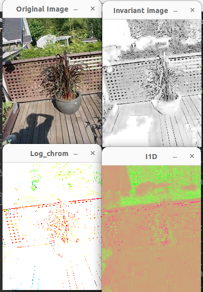

Intrinsic Images by Entropy Minimization
Introduction
The paper aims to remove shadows from a single image without any prior information such as camera calibration, other images taken from a similar camera, and illumination information. The authors have approached this problem in a unique way by employing the entropy minimization technique to determine the invariant image. They have determined the L1 invariant image and reconstructed the shadow-free image from another paper by the same author published in the past "Removing shadows from images". We aim to reconstruct this paper by determining the angle which minimizes the entropy of the projected log chromaticity of an image. inspired by this paper we have compared the results with the method of determining invariant images by geometric mean 2-D chromaticity space, BG, GR, RB, and geometric sum 2-D chromaticity space. Before this paper, the methods for shadow removal depend on the camera calibration or multiple images from the same camera captured under different lighting conditions. But this method aims to remove shadows with just a single image through entropy minimization.
Method
The method for computing invariant image involves the following steps:
- Determine the 2D chromaticity image by either projecting it into a 2D plane or dividing 2 color channels with the third color channel.
- As a pre-processing step, change the value of all 0 valued pixels to 1.
- Compute the log chromaticity of the image by applying a log on each of the pixel values. This step may lead to a lot of negative values, which can be normalized to non-negative values if required.
- Project the log chromaticity values on the axis with angles from 0 to 180.
- Eliminate outliers using the 6-sigma approach to prevent noise from being enhanced.
- Compute the mean and standard deviation of the resulting projected image, and determine the pixels within a range of 3 times the standard deviation. This ensures the pixel values are within the 5 to 95 percentile range.
- Compute the histogram of the resulting pixels with the bin width mentioned in the paper: bin_size = 3.5 * std_dev * img_shape^(-1/3).
- Compute the entropy using the Shannon entropy formula and determine the angle at which there is minimum entropy.
- To find the invariant image, project the log chromaticity image with the obtained minimum entropy angle which is the invariant angle.
Results
Chromaticity Spaces Tested:
- Single color channel (B/G/R)
- Arithmetic mean ((B+G+R)/3)
- Geometric mean ((B*G*R)^(1/3))
Single color channel:
Arithmetic Mean:
Geometric Mean :
Mean
Other Results:


The method performs really well in determining the L1 invariance. However, in the case of the painting picture, the L1 invariance is too low. It is inferred that the painting has artificial shadows, and the method is failing in this case. However, increasing the brightness reveals a greenish texture, indicating that the method is trying to produce something but is definitely failing in the case of the painting.